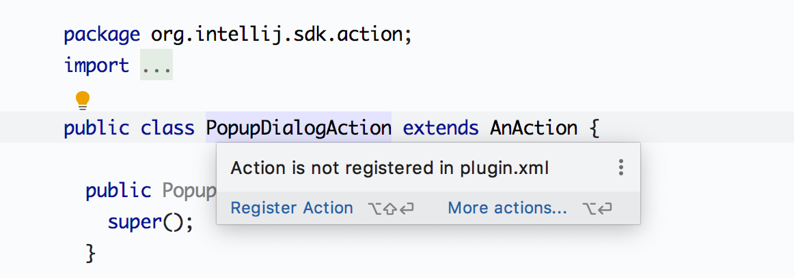
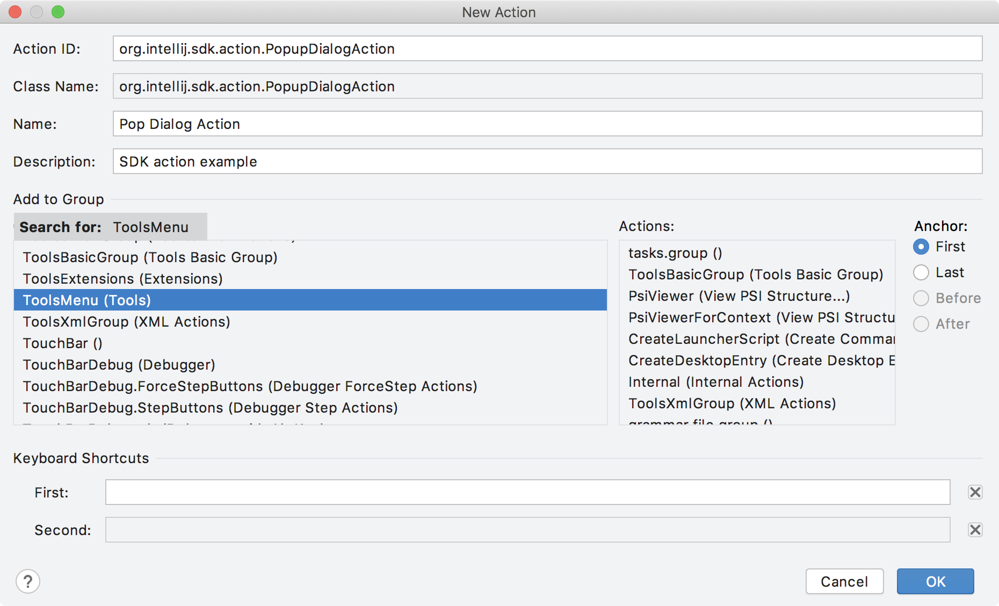
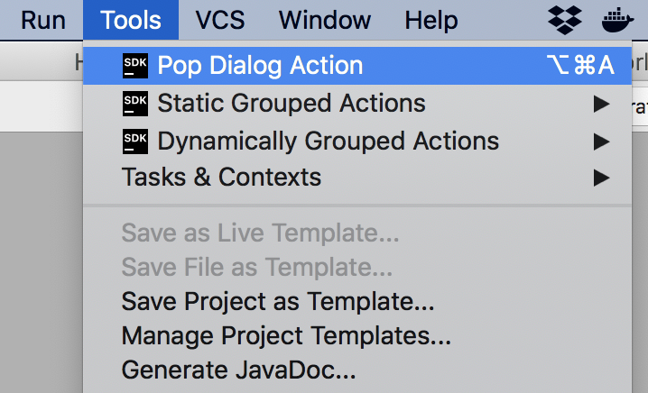
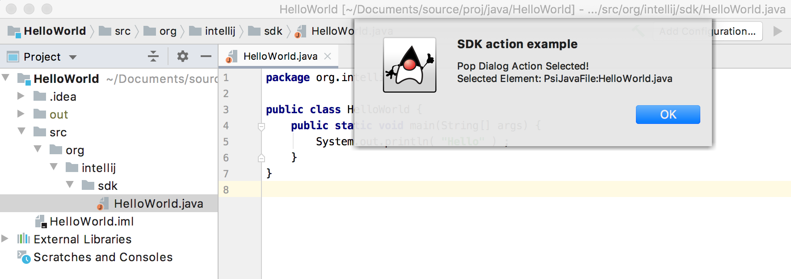

Creating Actions
Introduction
Plugins can add actions to existing IDE menus and toolbars, as well as add new menus and toolbars. The Consulo calls the actions of plugins in response to user interactions with the IDE. However, the actions of a plugin must first be defined and registered with the Consulo.
Using the SDK code sample action_basics, this tutorial illustrates the steps to create an action for a plugin.
- bullet list {:toc}
Creating a Custom Action
Custom actions extend the abstract class AnAction.
Classes that extend it should override AnAction.update(), and must override AnAction.actionPerformed().
* The update() method implements the code that enables or disables an action.
* The actionPerformed() method implements the code that executes when an action is invoked by the user.
As an example, PopupDialogAction overrides AnAction for the action_basics code sample.
public class PopupDialogAction extends AnAction {
@Override
public void update(AnActionEvent e) {
// Using the event, evaluate the context, and enable or disable the action.
}
@Override
public void actionPerformed(@NotNull AnActionEvent e) {
// Using the event, implement an action. For example, create and show a dialog.
}
}
WARNING
AnActionclasses do not have class fields of any kind. This restriction prevents memory leaks. For more information about why, see Action Implementation.
At this stage, update() implicitly defaults always to enable this action.
The implementation of actionPerformed() does nothing.
These methods fully implemented in Developing the AnAction Methods below.
Before fleshing out those methods, to complete this minimal implementation, PopupDialogAction must be registered with the Consulo.
Registering a Custom Action
Actions are registered by declaring them in code or by declaring them in the <actions> section of a plugin configuration (plugin.xml) file.
This section describes using IDE tooling - the New Action Form - to add a declaration to the plugin.xml file, and then tuning registration attributes manually.
A more comprehensive explanation of action registration is available in the Action Registration section of this guide.
Registering an Action with the New Action Form
IntelliJ IDEA has an embedded inspection that spots unregistered actions.
Verify the inspection is enabled at Settings/Preferences | Editor | Inspections | Plugin DevKit | Code | Component/Action not registered.
Here is an example for this stage of the PopupDialogAction class:
{:width="600px"}
To register PopupDialogAction and set up its basic attributes press Alt + Shift + Enter.
Fill out the New Action form to set up the parameters for PopupDialogAction:
{:width="800px"}
The fields of the form are: * Action ID - Every action must have a unique ID. If the action class is used in only one place in the IDE UI, then the class FQN is a good default for the ID. Using the action class in multiple places requires mangling the ID, such as adding a suffix to the FQN, for each ID. * Class Name - The FQN implementation class for the action. If the same action is used in multiple places in the IDE UI, the implementation FQN can be reused with a different Action ID. * Name - The text to appear in the menu. * Description - Hint text to be displayed. * Add to Group - The action group - menu or toolbar - to which the action is added. Clicking in the list of groups and typing invokes a search, such as "ToolsMenu." * Anchor - Where the menu action should be placed in the Tools menu relative to the other actions in that menu.
In this case, PopupDialogAction would be available in the Tools menu, it would be placed at the top, and would have no shortcuts.
After finishing the New Action form and applying the changes, the <actions> section of the plugin's plugins.xml file would contain:
<actions>
<action id="org.intellij.sdk.action.PopupDialogAction" class="org.intellij.sdk.action.PopupDialogAction"
text="Pop Dialog Action" description="SDK action example">
<add-to-group group-id="ToolsMenu" anchor="first"/>
</action>
</actions>
The <action> element declares the Action ID (id,) Class Name (class,) Name (text,) and Description from the New Action form.
The <add-to-group> element declares where the action will appear and mirrors the names of entries from the form.
This declaration is adequate, but adding more attributes is discussed in the next section.
Setting Registration Attributes Manually
An action declaration can be added manually to the plugin.xml file.
An exhaustive list of declaration elements and attributes is presented in Registering Actions in plugin.xml.
Attributes are added by selecting them from the New Action form, or by editing the registration declaration directly in the plugin.xml file.
The <action> declaration for PopupDialogAction in the action_basics plugin.xml file.
It also contains an attribute for an Icon and encloses elements declaring text overrides, keyboard and mouse shortcuts, and to which menu group the action should be added.
The full declaration is:
<action id="org.intellij.sdk.action.PopupDialogAction" class="org.intellij.sdk.action.PopupDialogAction"
text="Action Basics Plugin: Pop Dialog Action" description="SDK action example" icon="SdkIcons.Sdk_default_icon">
<override-text place="MainMenu" text="Pop Dialog Action"/>
<keyboard-shortcut first-keystroke="control alt A" second-keystroke="C" keymap="$default"/>
<mouse-shortcut keystroke="control button3 doubleClick" keymap="$default"/>
<add-to-group group-id="ToolsMenu" anchor="first"/>
</action>
Using Override-Text for an Action
By using the override-text element introduced in 2020.1 of the Consulo, the action text can be different depending on the context of where the action appears: menu, toolbar, etc.
The example above uses this element to ensure the shorter text "Pop Dialog Action" is shown anywhere the action appears in the Main Menu structure.
Otherwise, the default, more explanatory text "Action Basics Plugin: Pop Dialog Action" is shown.
For more information, see Setting the Override-Text Element
Testing the Minimal Custom Action Implementation
After performing the steps described above, compile and run the plugin to see the newly created action available as a Tools Menu item, which is within the context of the Main Menu:
{:width="350px"}
To see the alternate, more verbose text declared by the override-text element, use Help | Find Action... and search for "Pop Dialog Action".
The search shows the verbose menu text in a context outside of the Main Menu:
 {:width="500px"}
{:width="500px"}
Selecting the action from the menu, keyboard/mouse shortcuts, or Find Action won't do anything at this point because the implementations are empty. However, it confirms the new entry appears at Tools | Pop Dialog Action and Help | Find Action....
Developing the AnAction Methods
At this point, the new action PopupDialogAction is registered with the Consulo and functions in the sense that update() and actionPerformed() are called in response to user interaction with the IDE Tools menu.
However, neither method implements any code to perform useful work.
This section describes adding useful code to these methods.
The update() method defaults to always enable the action, which is satisfactory for intermediate testing.
So actionPerformed() will be developed first.
Extending the actionPerformed() Method
Adding code to the PopupDialogAction.actionPerformed() method makes the action do something useful.
The code below gets information from the anActionEvent input parameter and constructs a message dialog.
A generic icon, and the dlgMsg and dlgTitle attributes from the invoking menu action are displayed.
However, code in this method could manipulate a project, invoke an inspection, change the contents of a file, etc.
For demonstration purposes the AnActionEvent.getData() method tests if a Navigatable object is available.
If so, information about the selected element is added to the dialog.
See Determining the Action Context for more information about accessing information from the AnActionEvent input parameter.
@Override
public void actionPerformed(@NotNull AnActionEvent event) {
// Using the event, create and show a dialog
Project currentProject = event.getProject();
StringBuffer dlgMsg = new StringBuffer(event.getPresentation().getText() + " Selected!");
String dlgTitle = event.getPresentation().getDescription();
// If an element is selected in the editor, add info about it.
Navigatable nav = event.getData(CommonDataKeys.NAVIGATABLE);
if (nav != null) {
dlgMsg.append(String.format("\nSelected Element: %s", nav.toString()));
}
Messages.showMessageDialog(currentProject, dlgMsg.toString(), dlgTitle, Messages.getInformationIcon());
}
Extending the update() Method
Adding code to PopupDialogAction.update() gives finer control of the action's visibility and availability.
The action's state and(or) presentation can be dynamically changed depending on the context.
WARNING This method needs to execute very quickly. For more information about this constraint, see the warning in Overriding the AnAction.update Method.
In this example, the update() method relies on a Project object being available.
This requirement means the user must have at least one project open in the IDE for the PopupDialogAction to be available.
So the update() method disables the action for contexts where a Project object isn't defined.
The availability (enabled and visible) is set on the Presentation object.
Setting both the enabled state and visibility produces consistent behavior despite possible host menu settings, as discussed in Grouping Actions.
@Override
public void update(AnActionEvent e) {
// Set the availability based on whether a project is open
Project project = e.getProject();
e.getPresentation().setEnabledAndVisible(project != null);
}
The update() method does not check to see if a Navigatable object is available before enabling PopupDialogAction.
This check is unnecessary because using the Navigatable object is opportunistic in actionPerformed().
See Determining the Action Context for more information about accessing information from the AnActionEvent input parameter.
Other Method Overrides
A constructor is overridden in PopupDialogAction, but this is an artifact of reusing this class for a dynamically created menu action.
Otherwise, overriding constructors for AnAction is not required.
Testing the Custom Action
After compiling and running the plugin project and invoking the action, the dialog will pop up:
{:width="800px"}